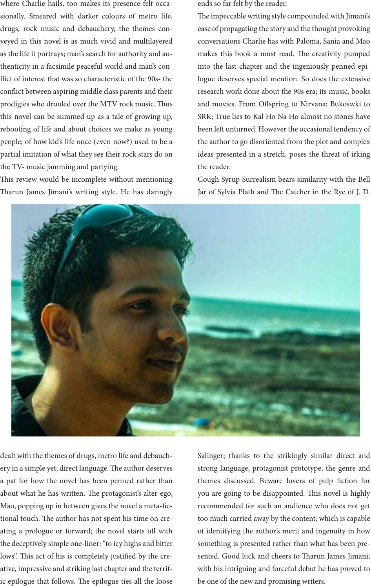

where Charlie hails, too makes its presence felt occa-
sionally. Smeared with darker colours of metro life,
drugs, rock music and debauchery, the themes con-
veyed in this novel is as much vivid and multilayered
as the life it portrays; man’s search for authority and au-
thenticity in a facsimile peaceful world and man’s con-
ict of interest that was so characteristic of the 90s- the
conict between aspiring middle class parents and their
prodigies who drooled over the MTV rock music. us
this novel can be summed up as a tale of growing up,
rebooting of life and about choices we make as young
people; of how kid’s life once (even now?) used to be a
partial imitation of what they see their rock stars do on
the TV- music jamming and partying.
is review would be incomplete without mentioning
arun James Jimani’s writing style. He has daringly
dealt with the themes of drugs, metro life and debauch-
ery in a simple yet, direct language. e author deserves
a pat for how the novel has been penned rather than
about what he has written. e protagonist’s alter-ego,
Mao, popping up in between gives the novel a meta-c-
tional touch. e author has not spent his time on cre-
ating a prologue or forward; the novel starts o with
the deceptively simple one-liner: “to icy highs and bitter
lows”. is act of his is completely justied by the cre-
ative, impressive and striking last chapter and the terrif-
ic epilogue that follows. e epilogue ties all the loose
ends so far felt by the reader.
e impeccable writing style compounded with Jimani’s
ease of propagating the story and the thought provoking
conversations Charlie has with Paloma, Sania and Mao
makes this book a must read. e creativity pumped
into the last chapter and the ingeniously penned epi-
logue deserves special mention. So does the extensive
research work done about the 90s era; its music, books
and movies. From Ospring to Nirvana; Bukoswki to
SRK; True lies to Kal Ho Na Ho almost no stones have
been le unturned. However the occasional tendency of
the author to go disoriented from the plot and complex
ideas presented in a stretch, poses the threat of irking
the reader.
Cough Syrup Surrealism bears similarity with the Bell
Jar of Sylvia Plath and e Catcher in the Rye of J. D.
Salinger; thanks to the strikingly similar direct and
strong language, protagonist prototype, the genre and
themes discussed. Beware lovers of pulp ction for
you are going to be disappointed. is novel is highly
recommended for such an audience who does not get
too much carried away by the content; which is capable
of identifying the author’s merit and ingenuity in how
something is presented rather than what has been pre-
sented. Good luck and cheers to arun James Jimani;
with his intriguing and forceful debut he has proved to
be one of the new and promising writers.